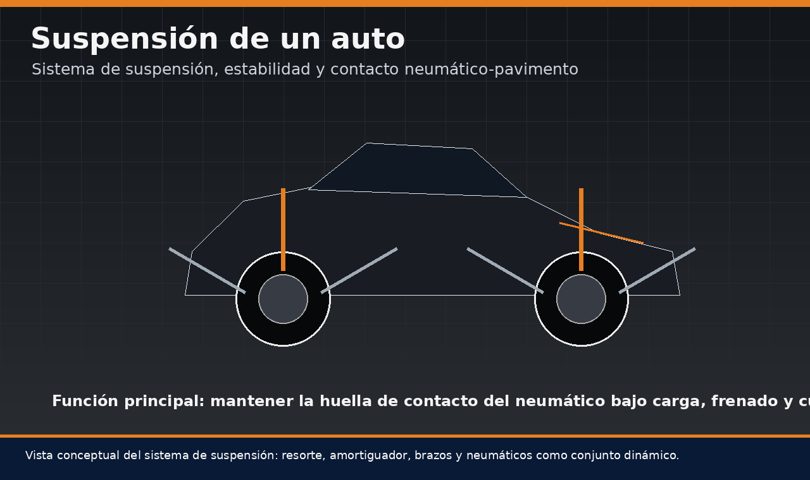
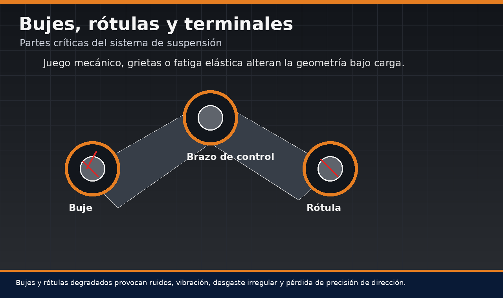
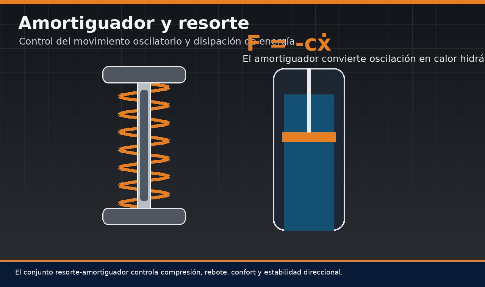
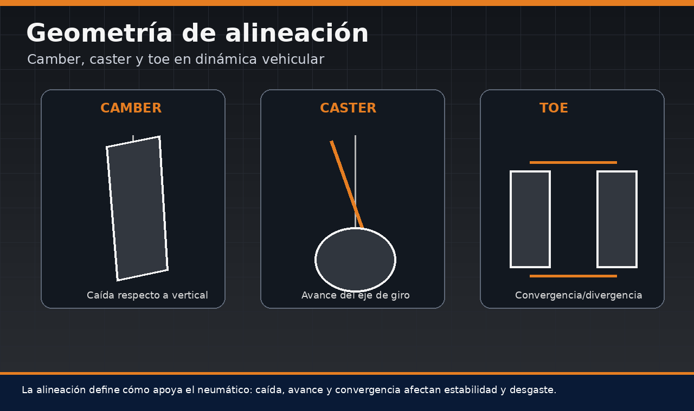
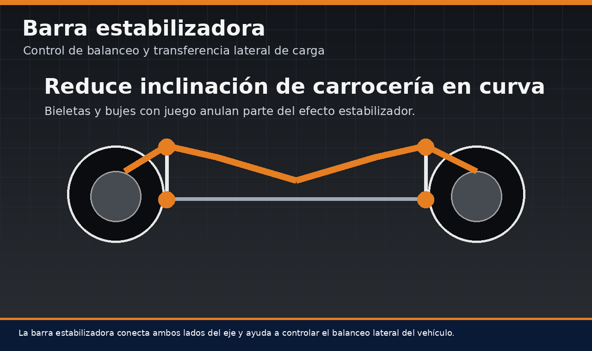
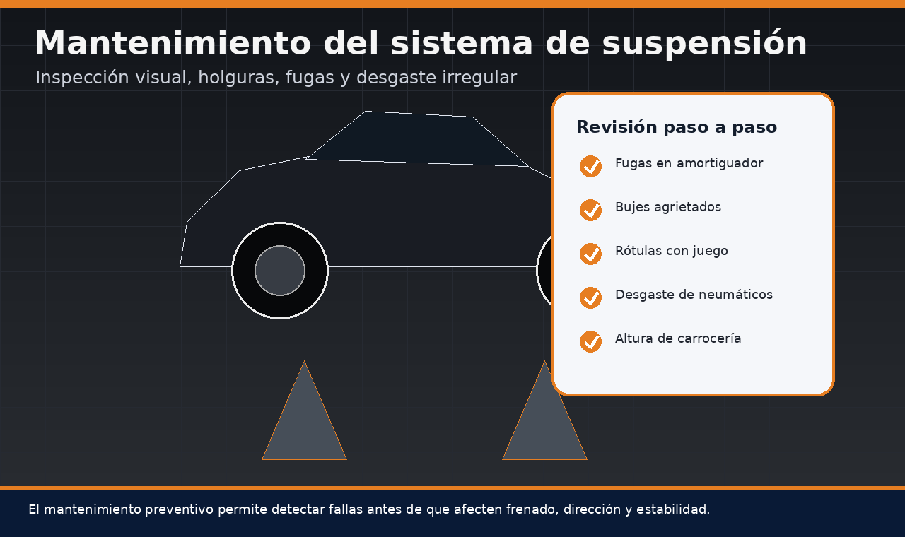
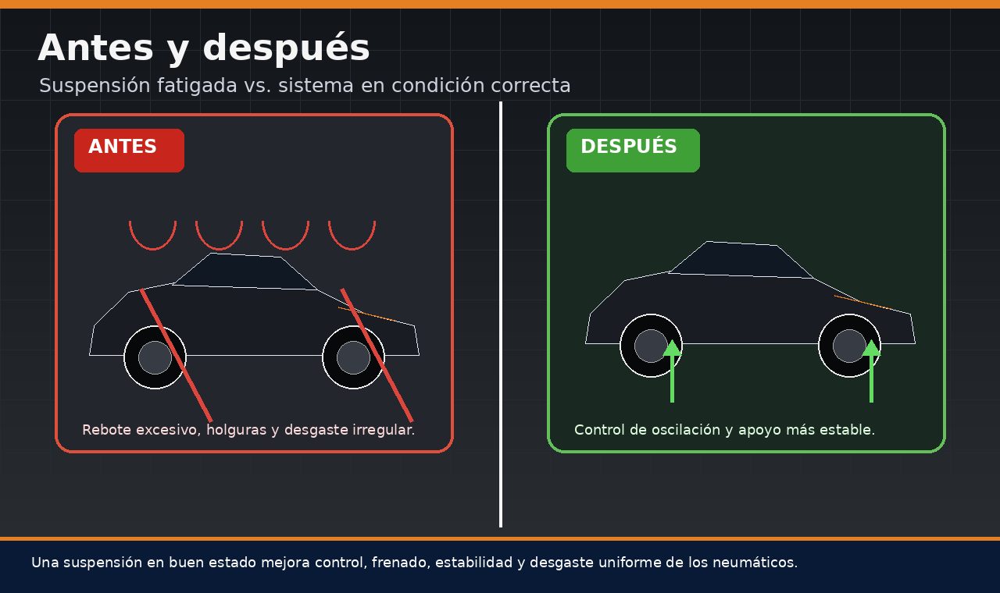

La suspensión de un auto es uno de los sistemas más importantes para la seguridad, el confort y la estabilidad del vehículo. Aunque muchas veces se la asocia únicamente con suavidad al conducir, su función técnica va mucho más allá: mantiene el contacto entre neumático y pavimento, controla el movimiento de la carrocería, estabiliza el frenado, reduce vibraciones y permite que la dirección responda con precisión. Por eso, entender el sistema de suspensión, sus partes y su mantenimiento paso a paso es fundamental para conservar el comportamiento original del vehículo.

Contenido del artículo
- Capítulo 1: Qué es la suspensión de un auto
- Capítulo 2: Partes del sistema de suspensión
- Capítulo 3: Amortiguadores, resortes y control de oscilación
- Capítulo 4: Tipos de suspensión automotriz
- Capítulo 5: Geometría, alineación y estabilidad
- Capítulo 6: Mantenimiento del sistema de suspensión paso a paso
- Capítulo 7: Precio, diagnóstico y conclusión técnica
Capítulo 1: Qué es la Suspensión de un Auto
La suspensión de un auto es el conjunto de elementos mecánicos que conecta la carrocería con las ruedas. Su misión es absorber irregularidades del camino, controlar el movimiento vertical del vehículo y mantener la mayor superficie posible del neumático en contacto con el pavimento. Esto permite que el vehículo pueda frenar, girar y acelerar con mayor estabilidad.
En búsquedas comunes aparece tanto “suspensión” como “suspención”, pero el término correcto es suspensión. Independientemente de la forma en que se busque, el concepto técnico es el mismo: se trata de un sistema encargado de gestionar energía, cargas y movimientos. No debe confundirse con “suspensión de suspender” en sentido gramatical; en mecánica automotriz, suspensión se refiere al sistema físico que soporta y controla el chasis.
Capítulo 2: Partes del Sistema de Suspensión
Cuando se habla de suspensión de un auto partes o sistema de suspensión partes, se hace referencia a todos los componentes que permiten unir la rueda al chasis de manera controlada. Entre los elementos más importantes se encuentran amortiguadores, resortes, brazos de control, bujes, rótulas, terminales, bieletas, barra estabilizadora, copelas, soportes y, en algunos diseños, subchasis o estructuras auxiliares.
Bujes, rótulas y articulaciones del chasis
Los bujes son elementos elásticos que permiten movimiento controlado entre piezas metálicas. Su función es absorber vibraciones, reducir ruido y evitar que la carrocería reciba impactos directos desde la suspensión. Cuando el caucho se agrieta, se endurece o pierde elasticidad, aparecen holguras que alteran la geometría del vehículo.
Las rótulas y terminales de dirección funcionan como articulaciones esféricas. Permiten que la rueda cambie de ángulo durante el giro y el recorrido de suspensión. Una rótula con juego puede generar ruidos, inestabilidad, vibración y desgaste irregular de neumáticos. Por eso, dentro de los componentes del sistema de suspensión, estas piezas son críticas para la seguridad.

Capítulo 3: Amortiguadores, Resortes y Control de Oscilación
El resorte soporta parte del peso del vehículo y absorbe energía cuando la rueda pasa sobre una irregularidad. Sin embargo, si el vehículo solo tuviera resortes, rebotaría repetidamente después de cada impacto. El amortiguador se encarga de controlar esa oscilación y disipar energía mediante resistencia hidráulica.
Función del amortiguador
El amortiguador convierte parte de la energía cinética del movimiento en calor dentro del fluido hidráulico. Esto reduce el rebote de la carrocería y mantiene el neumático más estable sobre el pavimento. Cuando un amortiguador pierde eficiencia, el vehículo puede sentirse flotante, hundirse excesivamente al frenar o balancearse más de lo normal en curvas.
Esta pérdida de control no solo afecta comodidad. También puede aumentar la distancia de frenado, reducir estabilidad en maniobras evasivas y acelerar el desgaste de neumáticos. Por eso, el mantenimiento del sistema de suspensión no debe dejarse únicamente para cuando aparecen ruidos evidentes.

Capítulo 4: Tipos de Suspensión Automotriz
Existen varios tipos de suspensión automotriz, y cada diseño responde a objetivos diferentes de costo, confort, espacio, estabilidad y desempeño. No todos los vehículos necesitan la misma arquitectura: un auto urbano prioriza economía y simplicidad, mientras que un vehículo deportivo o de gama alta puede utilizar sistemas más complejos para controlar mejor la geometría de las ruedas.
Entre los tipos de sistema de suspensión más comunes se encuentran la suspensión McPherson, el eje de torsión, la suspensión independiente, la suspensión multi-link, los sistemas de doble horquilla y, en vehículos más avanzados, suspensiones neumáticas, adaptativas o electrónicas. La suspensión independiente permite que cada rueda responda con menor interferencia respecto a la otra, mejorando el confort y el contacto con el suelo en superficies irregulares.
4.1 Suspensión independiente y eje de torsión
La suspensión independiente es valorada porque cada rueda puede moverse con mayor autonomía. Esto mejora la estabilidad y la absorción de irregularidades, especialmente en curvas o caminos deteriorados. En cambio, el eje de torsión es una solución más simple y económica, común en muchos vehículos compactos. Aunque puede ser robusto y eficiente, ofrece menor control geométrico en comparación con sistemas multi-link.
4.2 Suspensión y transmisión: sistemas diferentes
Algunas búsquedas mezclan dudas sobre suspensión con preguntas como cuántos tipos de transmisión tienen los vehículos. Aunque ambos sistemas forman parte de la arquitectura automotriz, cumplen funciones distintas. La transmisión gestiona cómo llega el torque del motor a las ruedas, mientras que la suspensión controla cómo esas ruedas se apoyan y reaccionan frente al camino.
Capítulo 5: Geometría, Alineación y Estabilidad
La suspensión no trabaja únicamente en movimiento vertical. También define ángulos críticos de alineación que afectan estabilidad, desgaste de neumáticos y respuesta de dirección. Camber, caster y toe determinan cómo se apoya la rueda y cómo se comporta el vehículo cuando acelera, frena o gira.
Camber, caster y toe
El camber o caída es la inclinación de la rueda respecto a la vertical. Un valor incorrecto puede generar desgaste interno o externo del neumático. El caster o avance influye en la estabilidad direccional y en el retorno del volante al centro. El toe o convergencia determina si las ruedas apuntan ligeramente hacia dentro o hacia fuera.
Cuando existe desgaste en bujes, rótulas o brazos, estos ángulos pueden cambiar bajo carga aunque la alineación estática parezca correcta. Por eso, una alineación efectiva requiere que el sistema de suspensión esté mecánicamente sano.

Barra estabilizadora y control de balanceo
La barra estabilizadora conecta ambos lados de un eje y se opone al balanceo excesivo de la carrocería en curvas. Su función es reducir inclinación lateral y mejorar sensación de control. Sin embargo, su eficacia depende del estado de bieletas y bujes. Si estos elementos tienen juego, la barra pierde parte de su capacidad de trabajo.
Un síntoma frecuente de bieletas dañadas es el ruido tipo golpeteo al pasar por irregularidades pequeñas. Aunque parezca un detalle menor, puede indicar pérdida de rigidez en un componente que afecta el control lateral del vehículo.

Capítulo 6: Mantenimiento del Sistema de Suspensión Paso a Paso
El mantenimiento del sistema de suspensión paso a paso debe incluir inspección visual, prueba de manejo, revisión de fugas, evaluación de ruidos, verificación de holguras y análisis del desgaste de neumáticos. Muchas personas buscan mantenimiento del sistema de suspensión PDF para tener una guía de revisión, pero lo esencial es comprender qué se debe observar y por qué cada síntoma importa.
Inspección preventiva
La inspección debe comenzar con el vehículo en una superficie segura. Se revisan fugas de aceite en amortiguadores, estado de guardapolvos, grietas en bujes, corrosión, tornillería floja, holguras en rótulas y desgaste irregular en neumáticos. También debe observarse la altura del vehículo, ya que un resorte vencido puede reducir la distancia al suelo y alterar la geometría.
El mantenimiento de suspensión de bicicleta comparte la idea básica de revisar articulaciones, holguras y absorción de impactos, pero en un automóvil las cargas son mucho mayores y los efectos sobre frenado, dirección y estabilidad son más críticos. Por eso, cualquier juego excesivo debe corregirse antes de realizar alineación o reemplazo de neumáticos.

- Revisar amortiguadores: buscar fugas, deformaciones, golpes o pérdida de control en rebote.
- Inspeccionar bujes: verificar grietas, endurecimiento, separación del caucho o desplazamientos anormales.
- Comprobar rótulas y terminales: detectar juego axial, radial o ruidos al girar y pasar irregularidades.
- Observar neumáticos: analizar desgaste irregular como señal de geometría alterada o piezas fatigadas.
- Verificar barra estabilizadora: revisar bieletas, bujes y anclajes.
- Realizar alineación: solo después de confirmar que no hay holguras mecánicas importantes.
Capítulo 7: Precio, Diagnóstico y Conclusión Técnica
La búsqueda suspensión de carro precio es común porque los costos pueden variar bastante. El precio depende del tipo de vehículo, número de piezas afectadas, marca de repuestos, mano de obra, necesidad de alineación y complejidad del sistema. No cuesta lo mismo reemplazar una bieleta que cambiar amortiguadores, brazos de control, bujes y copelas.
También debe considerarse que el diagnóstico correcto evita gastos innecesarios. Un ruido en suspensión no siempre significa amortiguador dañado; puede originarse en bujes, rótulas, terminales, bieletas, copelas o incluso soportes del motor. Por eso, antes de comprar repuestos, conviene realizar una inspección completa.
Antes y después de un sistema en buen estado
Una suspensión fatigada puede provocar rebote excesivo, pérdida de estabilidad, desgaste irregular de neumáticos, ruidos y mayor distancia de frenado. Después de una intervención correcta, el vehículo recupera control de oscilación, apoyo más estable y mejor respuesta de dirección.
El objetivo del mantenimiento no es solo eliminar ruidos. Es conservar la ingeniería dinámica del vehículo. Una suspensión en buen estado protege neumáticos, mejora frenado y permite que la dirección trabaje con mayor precisión.
